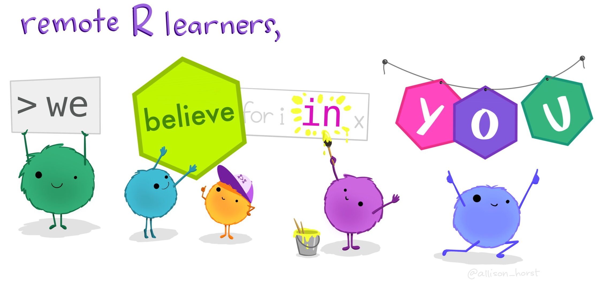
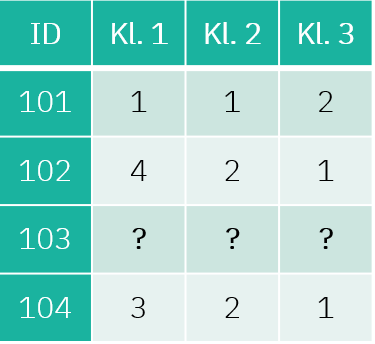

Įžanga


Šioje platformoje rasite mokymų medžiagą Lietuvos Statistikos
departamento viduje organizuojamiems mokymams, skirtiems tikslinėms
darbuotojų grupėms. Vienas pagrindinių šių mokymų siekių – platinti
Lietuvos Statistikos darbuotojų žinias ir gebėjimus atlikti statistinių
duomenų tinkamumo patvirtinimą, redagavimą, praleistų reikšmių įrašymą
naudojantis R programavimo kalba.
Teorinė mokymų medžiaga jau
yra parengta skaidrių pavidalu. Šioje platformoje turite galimybę
mokytis savarankiškai – peržiūrėti parengtą mokymų medžiagą, atlikti
praktines užduotis.
Pirmojoje mokymų dalyje pateikiama naudinga
informacija apie statistinių duomenų tinkamumo patvirtinimo, redagavimo
ir įrašymo procesus:
- Klaidų rūšis, pagal jų:
- Praleistų reikšmių (neatsakymų) tipą
- Pobūdį
- Kilmę
- Pasekmes
- Duomenų formato ir struktūros tinkamumo patvirtinimą
- Duomenų turinio tinkamumo patvirtinimą
Kaip tai veikia?
Rasite klausimų su atsakymų variantais:
Rasite klausimų, kuriuose reikalinga išrikiuoti atsakymus pagal tam tikrą eilę:
Taip pat, dirbsite su R, kur programavimo kodas veiks lyg dirbant
tiesiogiai programoje. Paspauskite Ctr+Enter arba
Vykdyti kodą mygtuką, kad įvykdytumėte programą.

2+2Jeigu nerandate tinkamo atsakymo kodo langelyje, galite pasinaudoti
Užuomina, arba pasitikrinti atsakymą Atsakymas
mygtuku.
Nepamirškite pateikti atsakymo paspausdami
Pateikti atsakymą mygtuką, kur gausite išsamesnį komentarą
apie savo kodą anglų kalba.

2+2==5Ar suma teisinga?2+2==4Taip pat, prieš pradedant mokymus, svarbu nuspausti mygtuką
Perkrauti (kaip pažymėta paveikslėlyje). Tai užtikrina, kad
užduotys yra vykdomos nuo pradžių. Šį mygtuką galite naudoti kaskart,
kai norite perkrauti mokymų medžiagą ir ją įvykdyti iš naujo.

Iliustracijos
Ši mokymų platforma iliustruota paveikslėliais, kuriuos galite rasti šiuo adresu. Naudojant šias iliustracijas, cituokite jas taip: “Artwork by @allison_horst”.
Sėkmės!
1. Klaidų rūšys - praleistos reikšmės
1.1. Peržiūrėkite žemiau pavaizduotą duomenų rinkinio fragmentą:


2. Klaidų rūšys - priežastys

2.1. Kuriam klaidų tipui priklauso žemiau pateikti apibrėžimai:
3. Klaidų rūšys - pobūdis
3.1. Kuriam klaidų tipui priklauso žemiau pateikti pavyzdžiai:

4. Redagavimo procesas
Statistinių duomenų tinkamumo patvirtinimo, redagavimo ir įrašymo procesą sudaro trijų tipų funkcijos (subprocesai).
4.1. Išrikiuokite procesų funkcijas pagal žemiau nurodytą jų pavadinimų eilę.
4.2. Pažymėkite 4 tinkamus atsakymo variantus:
5. Formato ir struktūros tinkamumo patvirtinimas
Viena iš statistinių duomenų tinkamumo patvirtinimo funkcijų rūšių yra statistinių duomenų rinkinio formato ir struktūros tinkamumo patvirtinimas. Tikrinama statistinių duomenų rinkinio struktūros atitiktis keliamiems reikalavimams, pvz. stulpelių atskyrimo simboliai, stulpelių skaičius, duomenų tipas, ir kiti.

Šioje mokymų dalyje susipažinsite su duomenų rinkiniu R Studio’s “Learning R Survey” kuris bus naudojamas kaip formato ir struktūros tikrinimo proceso pavyzdys. Kitose mokymų dalyse, dirbsite su nuasmenintais duomenimis naudojamais realiu laiku Lietuvos Statistikos Departamente ir kitur pasaulyje.
5.1. Parsisiųskite ir peržvelkite pavyzdinį duomenų rinkinį ir
pagalvokite ar jiems reikalingas tinkamumo patvirtinimas, redagavimas ir
įrašymas. Jei taip - kodėl?
Atkreipkite dėmesį, kitus
stulpelius galite peržiūrėti su rodyklėmis prie pavadinimų.
df <- read.csv("https://github.com/rstudio/learning-r-survey/raw/master/2019/data/2019%20English%20R%20Community%20Survey%20Responses.csv", fileEncoding = "UTF-8")Norėdami apžvelgti duomenų rinkinį tiesiog įveskite jo pavadinimą naujoje eilutėje ir paspauskite 'Vyktydti kodą'.df <- read.csv("https://github.com/rstudio/learning-r-survey/raw/master/2019/data/2019%20English%20R%20Community%20Survey%20Responses.csv", fileEncoding = "UTF-8")
df5.2. Apžvekite pirmųjų 5 stulpelių duomenų rinkinio struktūrą.
___(df[1:5])Naudokite str() funkciją.str(df[1:5])Matomai, kintamųjų pavadinimai yra per ilgi ir neinformatyvūs - su tokiais dirbti sunku.
Viena pirmųjų užduočių - pervadinti kintamųjų pavadinimus į
patogesnius. Tam atlikti naudosimės funkcija rename(), kuri
yra viena iš daugelio dplyr paketo funkcijų.
Dirbant savarankiškai, dplyr paketą turėsite parsisiųsti.
5.3. Sugalvokite naujus 2-tro ir 3-čio kinamųjų pavadinimus ir
pakeiskite jais ilgus pradinius kintamųjų pavadinimus. Patikrinkite, ar
pavyko kodo vykdymas su names(df[2:3]).
df <- df %>% # šiai funkcijai atlikti reikalingas dplyr paketas
dplyr::rename("_____" = "How.would.you.rate.your.level.of.experience.using.R.",
"_____" = "Compared.with.other.technical.topics.you.ve.learned.in.school.and.on.the.job..on.a.scale.of.1.to.5..how.difficult.do.you.expect.learning.R.to.be.")Užpildykite tuščias vietas. Savo nuožiūra duokite pasirinktus pavadinimus pirmiems dviems kintamiesiems. df <- df %>% # šiai funkcijai atlikti reikalingas dplyr paketas
dplyr::rename("Qr_experience" = "How.would.you.rate.your.level.of.experience.using.R.",
"Qr_difficulty" = "Compared.with.other.technical.topics.you.ve.learned.in.school.and.on.the.job..on.a.scale.of.1.to.5..how.difficult.do.you.expect.learning.R.to.be.")Turint omenyje, kad esama 52-jų kintamųjų, užtruktumėme pernelyg
ilgai perrašinėdami jų pavadinimus rankiniu būdu. Laimei, egzistuoja
funkcija names() leidžianti automatiškai perrašyti
kintamųjų pavadinimus identiškai pagal kito duomenų rinkinio
kintamuosius.
Taip pat, R Studio mums duoda šiokią tokią pagalbą: kintamųjų pavadinimų sąrašą, kuriuo naudojantis galime automatizuoti pavadinimų perrašymą.
5.4. Atsidarykite su kintamųjų pavadinimų sąrašu susijusį
.tsv failą (1 eilutė). Pasinaudokite
names() funkcija, kad pakeistumėte df
kintamųjų pavadinimus (3 eilutė). Su
names(df1[1:10]), patikrintike, ar pavyko (5
eilutė).
df1 <- read_tsv("https://raw.githubusercontent.com/rstudio/learning-r-survey/master/2019/data/2019-english-question-names-only.tsv", show_col_types = FALSE)
___(df) <- ___(df1)
names(df1[_:__])Pervadinant, 3-čioje eilutėje tuščiose reikšmėse įrašykite names(). Galiausiai, tikrintant, ar pavyko, pasirinkite pirmuosius 10 kintamųjų, t.y. `1:10` (5-toje eilutėje).df1 <- read_tsv("https://raw.githubusercontent.com/rstudio/learning-r-survey/master/2019/data/2019-english-question-names-only.tsv", show_col_types = FALSE)
names(df) <- names(df1)
names(df1[1:10])Prieš tikrindami duomenų rinkinio df reikšmes,
pasirūpinkime, kad kintamųjų pavadinimai prasidėtų mažąja raide. Taip
standartizuodami užtikrinsime, kad ateityje išvengsime galimų
klaidų.
Jeigu naudosite funkciją savarankiškai, nepamirškite instaliuoti janitor paketą.
5.5. Pakeiskite kintamųjų pavadinimus į mažąsias raides.
df <- df %>%
___::clean_names()
names(df[1:10])Tuščioje vietoje įveskite paketo pavadinimą.df <- df %>%
janitor::clean_names()
names(df[1:10])5.6. Patikrinkite, kokiai klasei ar duomenų tipui priklauso visi
duomenų rinkinio df kintamasis qpeople.
class(___$___)Galite naudoti funkciją class()class(df$qpeople)5.7. Galiausiai, patikrinkite, kokiai klasei ar duomenų tipui priklauso visi kintamieji.
lapply(___, ___)Galite naudoti funkciją lapply(list, function)lapply(df, class)6. Turinio tinkamumo patvirtinimas
Kita iš statistinių duomenų tinkamumo patvirtinimo funkcijų rūšių yra statistinių duomenų rinkinio turinio (loginio ir suderinamumo) tinkamumo patvirtinimas. Suderinamumo tikrinimas:
- statistinių duomenų rinkinio viduje (šios mokymų skilties užduotys);
- su kitais duomenų rinkiniais iš vieno duomenų šaltinio (pvz., lyginami skirtingų laikotarpių statistinio tyrimo duomenys);
- su kitais duomenų rinkiniais iš skirtingų duomenų šaltinių, statistikos sričių (pvz., lyginami skirtingų statistinių tyrimų duomenys).
Toliau, kaip pavyzdį, atliksime dalies duomenų akivaizdžių klaidų ir
reikšmių kombinacijų loginio nuoseklumo vertinimą.

Į jūsų aplinką jau įvestas naujas duomenų rinkinys pavadinimu
viesbuciai. Šio duomenų rinkinio turinys susideda iš
įvairių miesto viešbučių apie jų klientus renkamos informacijos, pvz.
viešbučio pavadinimo, laiko nuo kambario rezervacijos iki apsilankymo,
kiek naktų apsistota, vaikų/suaugusiųjų skaičiaus ir pan.
6.1. Pirmiausia, peržvelkite duomenų rinkinį(1
eilutė).
Patvirtinkite, kad teisingai suvestos laiko iki
rezervacijos reikšmės (dienų iki rezervacijos pradžios -
dienos_iki ir valandų iki rezervacijos pradžios -
valandos_iki), t.y. jeigu įvesta 1 diena, turėtų
atitinkamai būti 24val, 2 dienos - 48 val. ir t.t (3-5
eilutės).
View(_____)
nr <- which(viesbuciai$_____!=viesbuciai$_____*24)
viesbuciai[nr,]Peržvelkite viesbuciai duomenis. Įveskite 2 tikrinamus kintamuosius: valandos_iki ir dienos_iki. Pagalvokite, kuris iš šių kintamųjų turėtų būti padaugintas iš 24, kad būtų galima juos sulyginti. View(viesbuciai)
nr <- which(viesbuciai$valandos_iki!=viesbuciai$dienos_iki*24)
viesbuciai[nr,]Kitoje užduotyje tikrinsite, ar sutampa informacija apie rezervacijos statusą bei atšaukimą.
6.2. Pirmiausia, patikrinkite, kokios yra unikalios
rezervacijos_statusas ir atsaukta reikšmės.
Pagalvokite, kokia logika remiantis šie kintamieji galėtų būti
susiję.
unique(viesbuciai[,c("___", "___")])Tuščiose vietose įrašykite ieškomų kintamųjų pavadinimus. unique(viesbuciai[,c("rezervacijos_statusas", "atsaukta")])Remiantis jūsų gauta informacija, kintamasis atsaukta
yra dvireikšmis, t.y. “0” (rezervacija neatšaukta) bei “1” (rezervacija
atšaukta ir neįvykdyta).
Rezervacijos_statusas turi tris reikšmes:
"Atšauktas", "Registruotas",
"Nepasirodė".
6.3. Pasirinkta logika, patikrinkite, ar
rezervacijos_statusas ir atsaukta turiniai
tinkamai įrašyti ir vienas kitam neprieštarauja.
Galimi daug skirtingų sprendimo būdų. Vienas iš jų, pagal aukščiau apibrėžtą logiką, patikrinti, ar nėra eilučių, kurioms `atsaukta` yra 1, bet `rezervacijos_statusas` yra `Registruotas`. sum(viesbuciai$atsaukta==1 & viesbuciai$rezervacijos_statusas == "Registruotas")